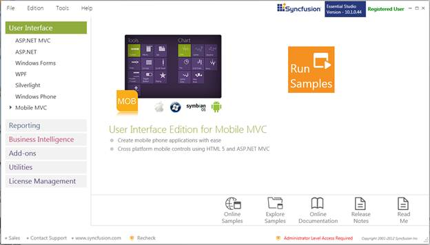
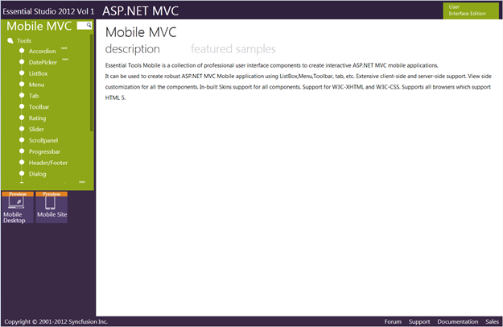

To view the samples, follow the steps below:
1. Click Start-->All Programs-->Syncfusion-->Essential Studio <version number> -->Dashboard. Essential Studio Enterprise Edition window is displayed.

Figure 1: Syncfusion Essential Studio Dashboard
User Interface Edition panel is selected by default.
2. Select the MOBILE MVC platform in the User Interface panel. The following options are displayed.
· Run Samples - View the locally installed Mobile Tools samples for ASP.NET MVC using the sample browser
· Online Samples - View the online Tools samples for MOBILE MVC
· Explore Samples - Locate the Mobile Tools samples on the disk
· Download Source Code - Download the source for ASP.NET MOBILE MVC
· Online Documentation - View the online Tools documentation for ASP.NET MOBILE MVC
· Release Notes - View the release notes of MOBILE ASP.NET MVC
· Read Me - View the read me content of User Interface Edition
You can view the samples in the preceding three ways.
3. Click Run Samples button. Essential Studio - ASP.NET MOBILE MVC Edition sample browser is displayed.

Figure 2: Essential Studio - ASP.NET MVC Edition Sample Browser
 Note: By default, Mobile Tools MVC samples are
displayed.
Note: By default, Mobile Tools MVC samples are
displayed.
4. Select any sample and browse through the features.
Source Code Location
Since this Product is still in the preview mode, the source code will not be downloaded.